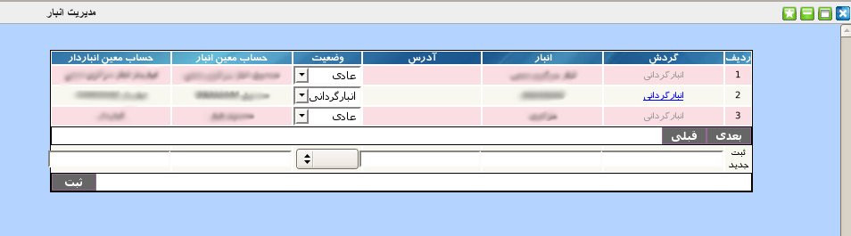
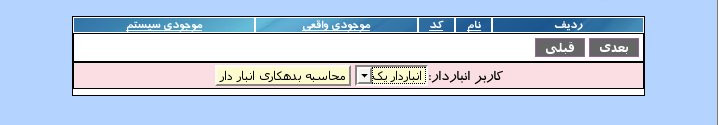

۱-مدیریت انبار
پنل مدیریت انبار یک پنل مدیریتی است که در آن می توان انبار جدیدی ثبت و یا اطلاعات انبار موجود ویرایش گردد.

برای ثبت انبار جدیدمی توانید از قسمت پایین پنل نام انبار,آدرس انبار وارد نموده و وضعیت انبار که عادی یا انبارگردانی است را از منو انتخاب و در انتها دکمه ثبت را کلیک نمایید. حساب معین انبار و حساب معین انبار دار به طور خودکار تولید و نمایش داده می شود که این مقادیر قابل ویرایش نمی باشد.
اگر وضعیت انبار, انبار گردانی انتخاب شود در ستون گردش لینک انبار گردانی فعال می گردد و با کلیک بر روی این لینک, جزئیات انبار گردانی شامل کد کالا, نام کالا, موجودی واقعی و موجودی سیستم کالا را مشاهده خواهید کرد. با کلیک بر روی دکمه محاسبه بدهی انباردار میزان بدهی انباردار به انبار مشخص می گردد.

جهت ویرایش مقادیر هر آیتم بر روی آن کلیک نمایید و پس از تصحیح کلید Enter را بزنید.
جهت حذف تکی هر آیتم, موس خود را بر روی شماره ردیف آیتم برده و بر روی لینک حذف کلیک نمایید.
جهت حذف گروهی آیتم ها, آیتم های مورد نظر را انتخاب و بر روی دکمه حذف کلیک نمایید.